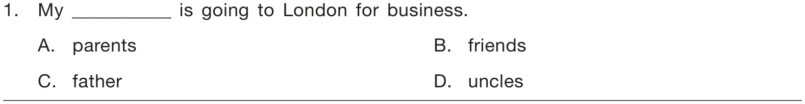
FOR QUESTIONS 1 TO 7, CHOOSE THE CORRECT OPTION TO FILL IN THE BLANK.
My ___________ is going to London for business.
parents
friends
father
uncles
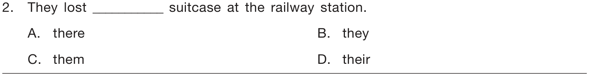
FOR QUESTIONS 1 TO 7, CHOOSE THE CORRECT OPTION TO FILL IN THE BLANK.
They lost ___________ suitcase at the railway station.
there
they
them
their
The possessive adjective “their” is used to indicate the ownership of the subject in the sentence.
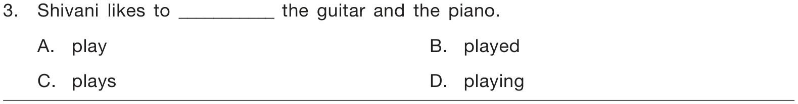
FOR QUESTIONS 1 TO 7, CHOOSE THE CORRECT OPTION TO FILL IN THE BLANK.
Shivani likes to ___________ the guitar and the piano.
play
played
plays
playing
We use the base form of the verb after the preposition “to” in the sentence, so the answer is “play”.
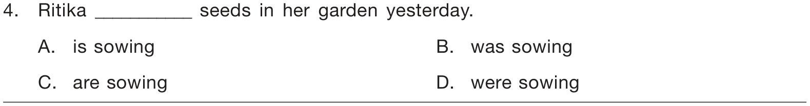
FOR QUESTIONS 1 TO 7, CHOOSE THE CORRECT OPTION TO FILL IN THE BLANK.
Ritika ___________ seeds in her garden yesterday.
is sowing
was sowing
are sowing
were sowing
The sentence is in the past continuous tense because it describes an ongoing past action that was ongoing at a particular moment in time, as indicated by the word “yesterday” in the sentence, so “was sowing” is the answer.
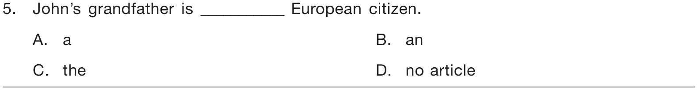
FOR QUESTIONS 1 TO 7, CHOOSE THE CORRECT OPTION TO FILL IN THE BLANK.
John’s grandfather is ___________ European citizen.
a
an
the
no article
The indefinite article “a” is used before the words beginning with a consonant sound, so the answer is “a European citizen”.
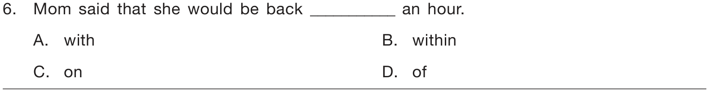
FOR QUESTIONS 1 TO 7, CHOOSE THE CORRECT OPTION TO FILL IN THE BLANK.
Mom said that she would be back ___________ an hour.
with
within
on
of
The suitable preposition to be used is “within”. It is used to state that a certain action should not exceed a particular point in time.
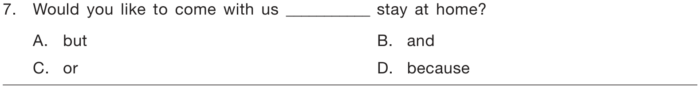
FOR QUESTIONS 1 TO 7, CHOOSE THE CORRECT OPTION TO FILL IN THE BLANK.
Would you like to come with us ___________ stay at home?
but
and
or
because
The conjunction “or” is used to connect the two alternatives in the sentence.
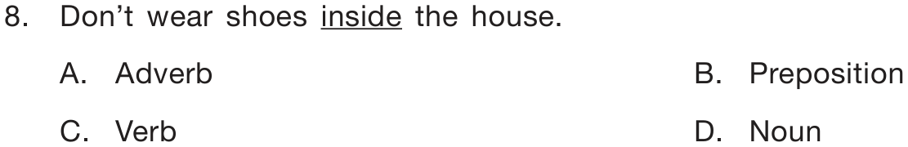
FOR QUESTIONS 8 AND 9, CHOOSE THE CORRECT OPTION FOR THE UNDERLINED WORD.
Adverb
Preposition
Verb
Noun
The suitable preposition to be used is “inside” because it is used to indicate the location in the inner part or surface of something.
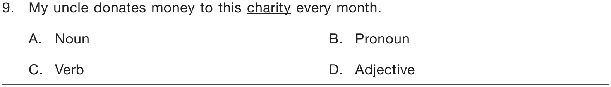
FOR QUESTIONS 8 AND 9, CHOOSE THE CORRECT OPTION FOR THE UNDERLINED WORD.
Noun
Pronoun
Verb
Adjective
The word “charity” is a noun in the given sentence, which means “an organisation that collects money to help people who are poor, sick, etc”.
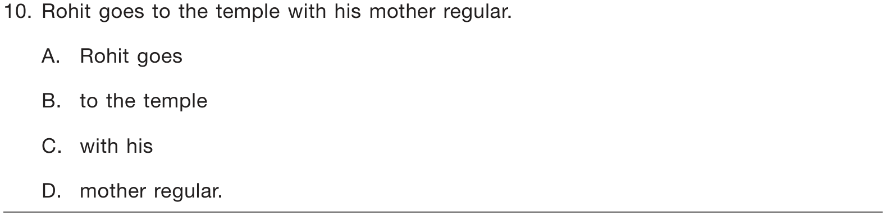
FOR QUESTIONS 10 AND 11, CHOOSE THE PART OF THE SENTENCE THAT HAS AN ERROR.
Rohit goes to the temple with his mother regular.
Rohit goes
to the temple
with his
mother regular.
The correct sentence is: Rohit goes to the temple with his mother regularly.
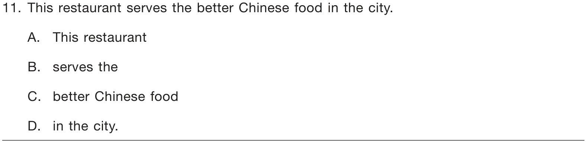
FOR QUESTIONS 10 AND 11, CHOOSE THE PART OF THE SENTENCE THAT HAS AN ERROR.
This restaurant serves the better Chinese food in the city.
This restaurant
serves the
better Chinese food
in the city.
The correct sentence is: This restaurant serves the best Chinese food in the city.
FOR QUESTIONS 12 AND 13, CHOOSE THE OPTION WITH CORRECT SPELLING.
Coleague
Colleague
Callague
Collegue
The correct spelling is “colleague”, which means “a person who works at the same place as you”.
FOR QUESTIONS 12 AND 13, CHOOSE THE OPTION WITH CORRECT SPELLING.
Strategic
Stretagick
Strategik
Stratejic
The correct spelling is “strategic”, which means “something that is related to careful planning and plotting in order to achieve a certain goal”.
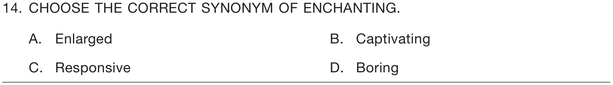
CHOOSE THE CORRECT SYNONYM OF ENCHANTING.
Enlarged
Captivating
Responsive
Boring
The synonym of the word “enchanting” is “captivating”, as they both mean “something that is very attractive”.
CHOOSE THE CORRECT ANTONYM OF OUTSKIRTS.
Edge
Boulder
Middle
Costumes
The antonym of the word “outskirts” is “middle”. The word “outskirts” means “the outer area of a city or town” and the word “middle” means “in the center of something”.
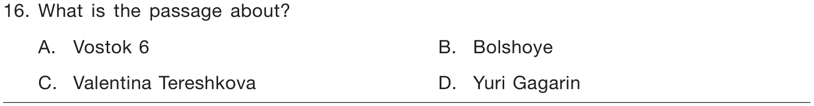
FOR QUESTIONS 16 TO 20, READ THE PASSAGE AND ANSWER THE QUESTIONS THAT FOLLOW.
The first woman to travel in space was Soviet cosmonaut, Valentina Tereshkova. She was born on 6 March 1937, in the village of Bolshoye Maslennikovo in central Russia. Her mother was a textile worker, and her father was a tractor driver who was later recognised as a war hero during the Second World War. At the time of his death on the Finnish front, Tereshkova was only two years old.
After leaving school, Tereshkova followed her mother into work at a textile factory. Her first adventure of flying was when she joined a local skydiving and parachutist club. It was her hobby of jumping out of planes that appealed to the Soviets’ space programme committee. On applying to the cosmonaut corps, Tereshkova was eventually chosen from more than 400 other candidates.
Tereshkova received 18 months of severe training with the Soviet Air Force after her selection. These tests studied her abilities to cope physically under the extremes of gravity, as well as handle challenges such as emergency management and the isolation of being in space alone. At the age of 24, she was honourably inducted into the Soviet Air Force. On 16 June 1963, Tereshkova was launched on a solo mission aboard the spacecraft, Vostok 6. She spent more than 70 hours orbiting the Earth, two years after Yuri Gagarin’s first human-crewed flight in space. Tereshkova still holds the title of the youngest and the only woman to have been on a solo space mission.
Today, she holds the position of Deputy Chair for the Committee for International Affairs in Russia. She also remains active within the space community and is quoted as suggesting that she would like to fly to Mars - even if it were a one-way trip.
– Royal Museums Greenwich
What is the passage about?
Vostok 6
Bolshoye
Valentina Tereshkova
Yuri Gagarin
The passage is about “Valentina Tereshkova”.
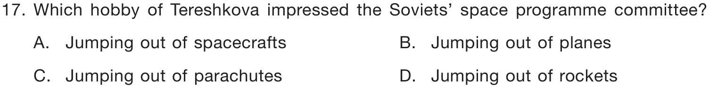
FOR QUESTIONS 16 TO 20, READ THE PASSAGE AND ANSWER THE QUESTIONS THAT FOLLOW.
The first woman to travel in space was Soviet cosmonaut, Valentina Tereshkova. She was born on 6 March 1937, in the village of Bolshoye Maslennikovo in central Russia. Her mother was a textile worker, and her father was a tractor driver who was later recognised as a war hero during the Second World War. At the time of his death on the Finnish front, Tereshkova was only two years old.
After leaving school, Tereshkova followed her mother into work at a textile factory. Her first adventure of flying was when she joined a local skydiving and parachutist club. It was her hobby of jumping out of planes that appealed to the Soviets’ space programme committee. On applying to the cosmonaut corps, Tereshkova was eventually chosen from more than 400 other candidates.
Tereshkova received 18 months of severe training with the Soviet Air Force after her selection. These tests studied her abilities to cope physically under the extremes of gravity, as well as handle challenges such as emergency management and the isolation of being in space alone. At the age of 24, she was honourably inducted into the Soviet Air Force. On 16 June 1963, Tereshkova was launched on a solo mission aboard the spacecraft, Vostok 6. She spent more than 70 hours orbiting the Earth, two years after Yuri Gagarin’s first human-crewed flight in space. Tereshkova still holds the title of the youngest and the only woman to have been on a solo space mission.
Today, she holds the position of Deputy Chair for the Committee for International Affairs in Russia. She also remains active within the space community and is quoted as suggesting that she would like to fly to Mars - even if it were a one-way trip.
– Royal Museums Greenwich
Which hobby of Tereshkova impressed the Soviets’ space programme committee?
Jumping out of spacecrafts
Jumping out of planes
Jumping out of parachutes
Jumping out of rockets
Tereshkova’s hobby of “jumping out of planes” impressed the Soviets’ space programme committee.
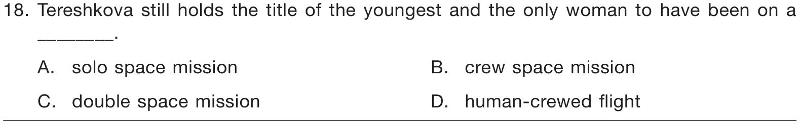
FOR QUESTIONS 16 TO 20, READ THE PASSAGE AND ANSWER THE QUESTIONS THAT FOLLOW.
The first woman to travel in space was Soviet cosmonaut, Valentina Tereshkova. She was born on 6 March 1937, in the village of Bolshoye Maslennikovo in central Russia. Her mother was a textile worker, and her father was a tractor driver who was later recognised as a war hero during the Second World War. At the time of his death on the Finnish front, Tereshkova was only two years old.
After leaving school, Tereshkova followed her mother into work at a textile factory. Her first adventure of flying was when she joined a local skydiving and parachutist club. It was her hobby of jumping out of planes that appealed to the Soviets’ space programme committee. On applying to the cosmonaut corps, Tereshkova was eventually chosen from more than 400 other candidates.
Tereshkova received 18 months of severe training with the Soviet Air Force after her selection. These tests studied her abilities to cope physically under the extremes of gravity, as well as handle challenges such as emergency management and the isolation of being in space alone. At the age of 24, she was honourably inducted into the Soviet Air Force. On 16 June 1963, Tereshkova was launched on a solo mission aboard the spacecraft, Vostok 6. She spent more than 70 hours orbiting the Earth, two years after Yuri Gagarin’s first human-crewed flight in space. Tereshkova still holds the title of the youngest and the only woman to have been on a solo space mission.
Today, she holds the position of Deputy Chair for the Committee for International Affairs in Russia. She also remains active within the space community and is quoted as suggesting that she would like to fly to Mars - even if it were a one-way trip.
– Royal Museums Greenwich
Tereshkova still holds the title of the youngest and the only woman to have been on a ________.
solo space mission
crew space mission
double space mission
human-crewed flight
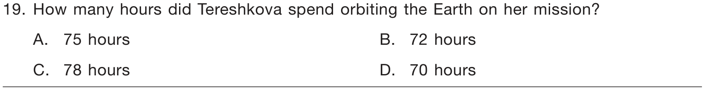
FOR QUESTIONS 16 TO 20, READ THE PASSAGE AND ANSWER THE QUESTIONS THAT FOLLOW.
The first woman to travel in space was Soviet cosmonaut, Valentina Tereshkova. She was born on 6 March 1937, in the village of Bolshoye Maslennikovo in central Russia. Her mother was a textile worker, and her father was a tractor driver who was later recognised as a war hero during the Second World War. At the time of his death on the Finnish front, Tereshkova was only two years old.
After leaving school, Tereshkova followed her mother into work at a textile factory. Her first adventure of flying was when she joined a local skydiving and parachutist club. It was her hobby of jumping out of planes that appealed to the Soviets’ space programme committee. On applying to the cosmonaut corps, Tereshkova was eventually chosen from more than 400 other candidates.
Tereshkova received 18 months of severe training with the Soviet Air Force after her selection. These tests studied her abilities to cope physically under the extremes of gravity, as well as handle challenges such as emergency management and the isolation of being in space alone. At the age of 24, she was honourably inducted into the Soviet Air Force. On 16 June 1963, Tereshkova was launched on a solo mission aboard the spacecraft, Vostok 6. She spent more than 70 hours orbiting the Earth, two years after Yuri Gagarin’s first human-crewed flight in space. Tereshkova still holds the title of the youngest and the only woman to have been on a solo space mission.
Today, she holds the position of Deputy Chair for the Committee for International Affairs in Russia. She also remains active within the space community and is quoted as suggesting that she would like to fly to Mars - even if it were a one-way trip.
– Royal Museums Greenwich
How many hours did Tereshkova spend orbiting the Earth on her mission?
75 hours
72 hours
78 hours
70 hours
Tereshkova spent “70 hours” orbiting the Earth on her mission.
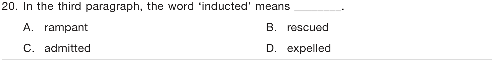
FOR QUESTIONS 16 TO 20, READ THE PASSAGE AND ANSWER THE QUESTIONS THAT FOLLOW.
The first woman to travel in space was Soviet cosmonaut, Valentina Tereshkova. She was born on 6 March 1937, in the village of Bolshoye Maslennikovo in central Russia. Her mother was a textile worker, and her father was a tractor driver who was later recognised as a war hero during the Second World War. At the time of his death on the Finnish front, Tereshkova was only two years old.
After leaving school, Tereshkova followed her mother into work at a textile factory. Her first adventure of flying was when she joined a local skydiving and parachutist club. It was her hobby of jumping out of planes that appealed to the Soviets’ space programme committee. On applying to the cosmonaut corps, Tereshkova was eventually chosen from more than 400 other candidates.
Tereshkova received 18 months of severe training with the Soviet Air Force after her selection. These tests studied her abilities to cope physically under the extremes of gravity, as well as handle challenges such as emergency management and the isolation of being in space alone. At the age of 24, she was honourably inducted into the Soviet Air Force. On 16 June 1963, Tereshkova was launched on a solo mission aboard the spacecraft, Vostok 6. She spent more than 70 hours orbiting the Earth, two years after Yuri Gagarin’s first human-crewed flight in space. Tereshkova still holds the title of the youngest and the only woman to have been on a solo space mission.
Today, she holds the position of Deputy Chair for the Committee for International Affairs in Russia. She also remains active within the space community and is quoted as suggesting that she would like to fly to Mars - even if it were a one-way trip.
– Royal Museums Greenwich
In the third paragraph, the word ‘inducted’ means ________.
rampant
rescued
admitted
expelled
In the third paragraph, the word “inducted” means “admitted”.
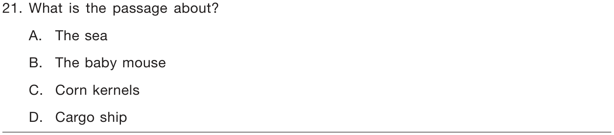
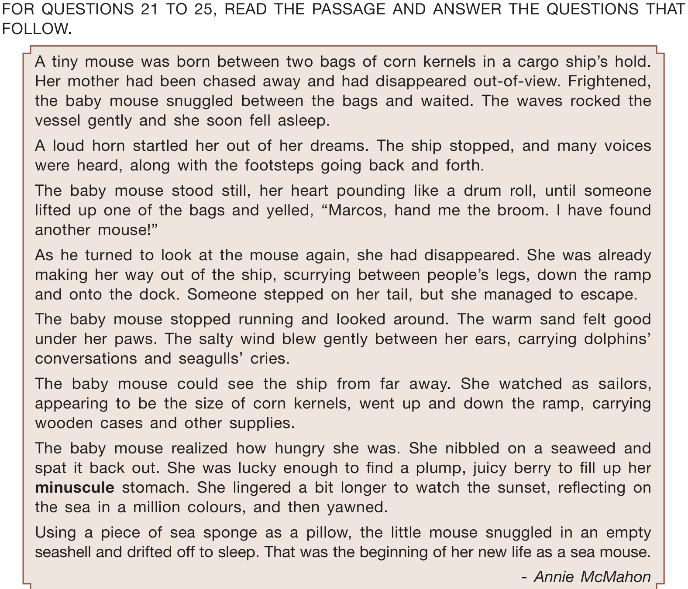
What is the passage about?
The sea
The baby mouse
Corn kernels
Cargo ship
The passage is about “the baby mouse”.
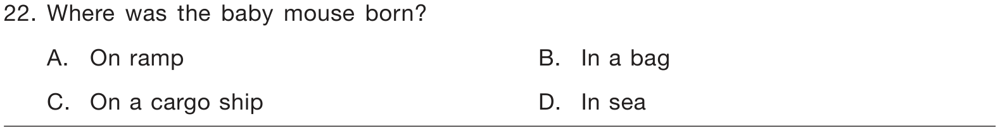
Where was the baby mouse born?
On ramp
In a bag
On a cargo ship
In sea
The baby mouse was born on a “cargo ship”.
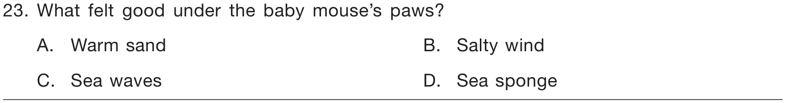
What felt good under the baby mouse’s paws?
Warm sand
Salty wind
Sea waves
Sea sponge
The warm sand felt good under the baby mouse’s paws.
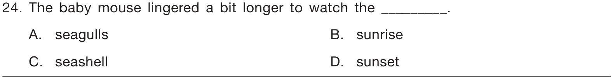
The baby mouse lingered a bit longer to watch the _________.
seagulls
sunrise
seashell
sunset
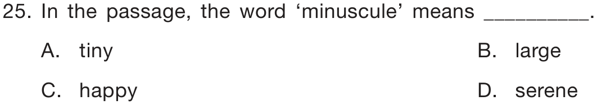
In the passage, the word ‘minuscule’ means __________.
tiny
large
happy
serene
In the passage, the word “minuscule” means “tiny”.
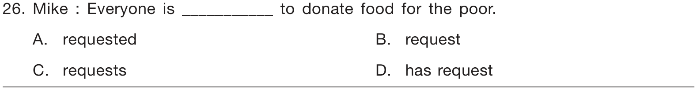
FOR QUESTIONS 26 TO 30, CHOOSE THE MOST SUITABLE OPTION TO COMPLETE EACH CONVERSATION.
Mike : Everyone is ___________ to donate food for the poor.
requested
request
requests
has request
The suitable form of the verb to be used is “requested”.
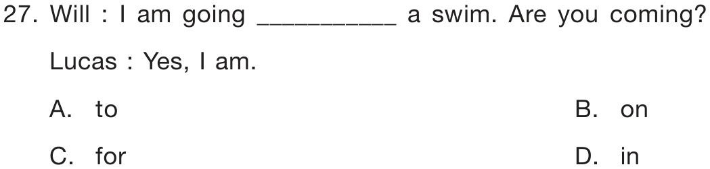
FOR QUESTIONS 26 TO 30, CHOOSE THE MOST SUITABLE OPTION TO COMPLETE EACH CONVERSATION.
Will : I am going ___________ a swim. Are you coming?
Lucas : Yes, I am.
to
on
for
in
The suitable preposition to be used is “for” because it states a particular purpose of the subject (I) in the sentence.
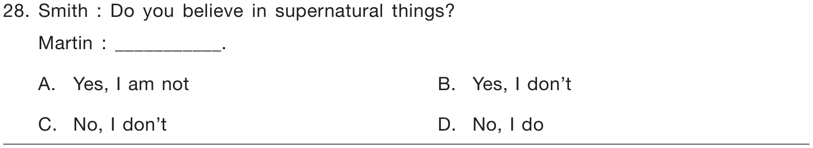
FOR QUESTIONS 26 TO 30, CHOOSE THE MOST SUITABLE OPTION TO COMPLETE EACH CONVERSATION.
Smith : Do you believe in supernatural things?
Martin : ___________.
Yes, I am not
Yes, I don’t
No, I don’t
No, I do
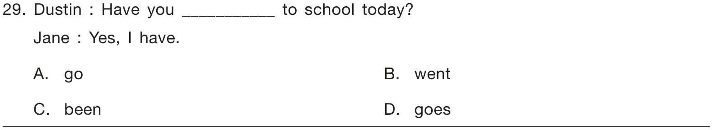
FOR QUESTIONS 26 TO 30, CHOOSE THE MOST SUITABLE OPTION TO COMPLETE EACH CONVERSATION.
Dustin : Have you ___________ to school today?
Jane : Yes, I have.
go
went
been
goes
The sentence is in the present perfect tense, the third form of the verb “been” is used, which means “to be present”.
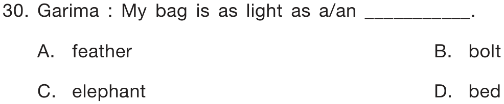
FOR QUESTIONS 26 TO 30, CHOOSE THE MOST SUITABLE OPTION TO COMPLETE EACH CONVERSATION.
Garima : My bag is as light as a/an ___________.
feather
bolt
elephant
bed
The phrase “as light as a feather” is used, which means “something that is extremely light”.
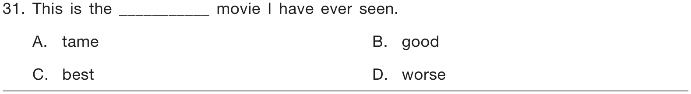
FOR QUESTIONS 31 AND 32, CHOOSE THE CORRECT OPTION TO FILL IN THE BLANK.
This is the ___________ movie I have ever seen.
tame
good
best
worse
With the definite article “the”, the superlative adjectives are used, so the answer is “best”.
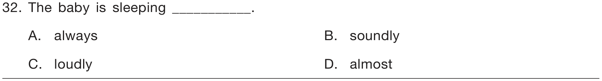
FOR QUESTIONS 31 AND 32, CHOOSE THE CORRECT OPTION TO FILL IN THE BLANK.
The baby is sleeping ___________.
always
soundly
loudly
almost
The adverb of manner “soundly” is used, which means “deeply and without disturbance”. It is used to modify the action of sleeping in the sentence.
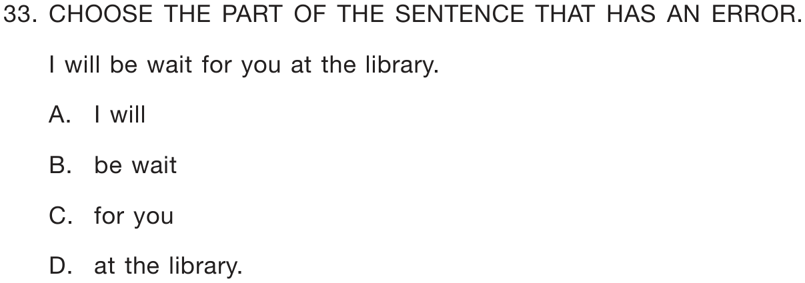
CHOOSE THE PART OF THE SENTENCE THAT HAS AN ERROR.
I will be wait for you at the library.
I will
be wait
for you
at the library.
The correct sentence is: I will be waiting for you at the library.
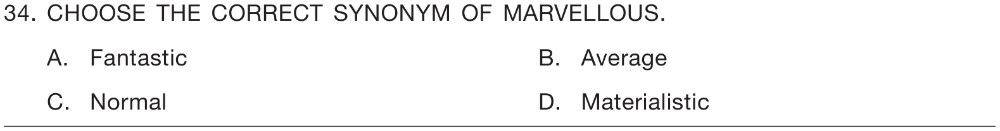
CHOOSE THE CORRECT SYNONYM OF MARVELLOUS.
Fantastic
Average
Normal
Materialistic
The synonym of the word “marvellous” is “fantastic”, as they both mean “something that is wonderful or excellent in nature”.
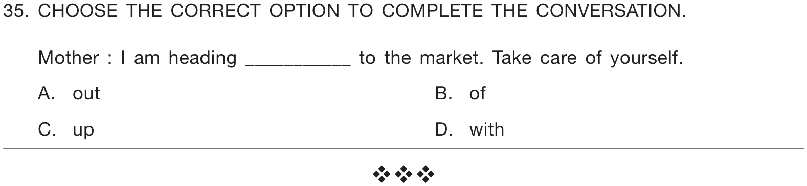
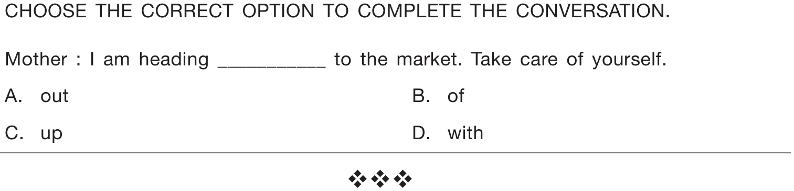
Option A
Option B
Option C
Option D
The preposition “out” followed by the verb “heading” is used in the sentence. “Heading out” means “to leave a place.”